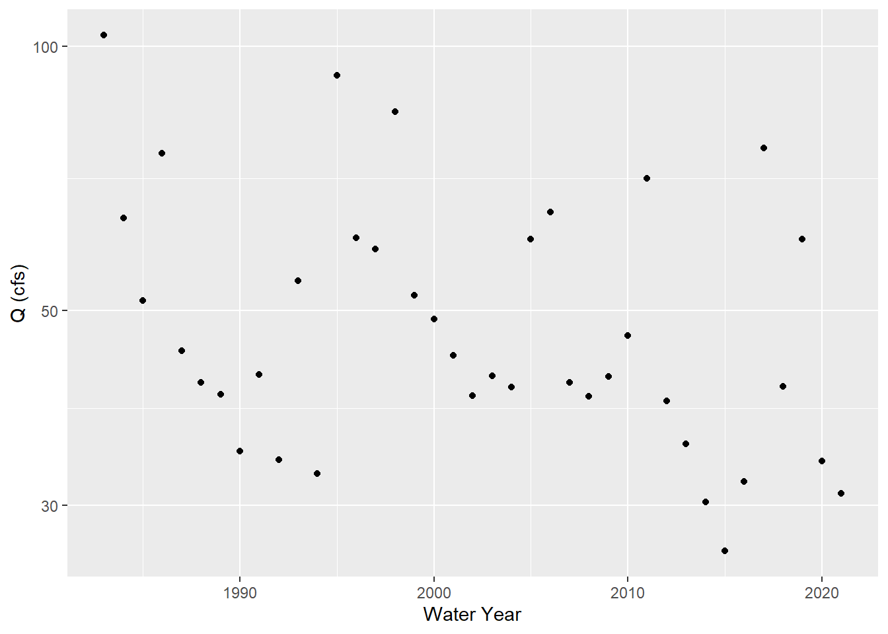

4 Question
How is climate change affecting ground water levels that can influence base flows in surface water discharge along Hot Creek near Mammoth Lakes, California?
4.1 Site Analysis
site_ca <- "10265150"
q_ca <- readNWISdv(siteNumbers = site_ca,
parameterCd = '00060',
startDate = '1983-07-07',
endDate = '2021-12-18') %>%
rename(q_cfs = X_00060_00003) %>%
addWaterYear(.) %>%
select(-agency_cd, -X_00060_00003_cd)4.2 Monthly Water Trends
q_month_means <- q_ca %>%
dplyr::mutate(month = month(Date),
year = year(Date)) %>%
group_by(year, month) %>%
summarize(q_mean = mean(q_cfs, na.rm = T))## `summarise()` has grouped output by 'year'. You can override using the `.groups` argument.head(q_month_means) ## # A tibble: 6 x 3
## # Groups: year [1]
## year month q_mean
## <dbl> <dbl> <dbl>
## 1 1983 7 209.
## 2 1983 8 155.
## 3 1983 9 103.
## 4 1983 10 90.6
## 5 1983 11 84.2
## 6 1983 12 78.34.3 Trends in September
q_sept <- q_month_means %>%
filter(month ==9)
ggplot(q_sept, aes( x= year, y= q_mean)) +
geom_point() +
scale_y_log10() +
ylab('Q (cfs)') +
xlab('Water Year') 